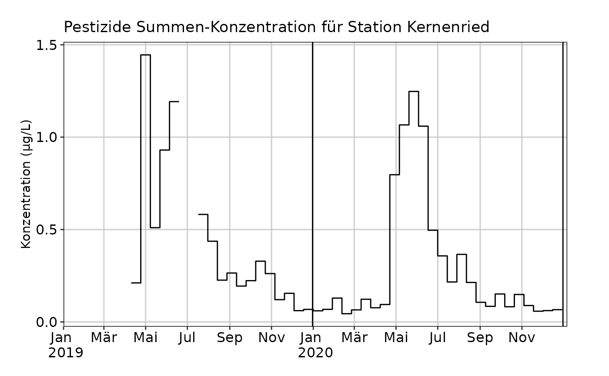
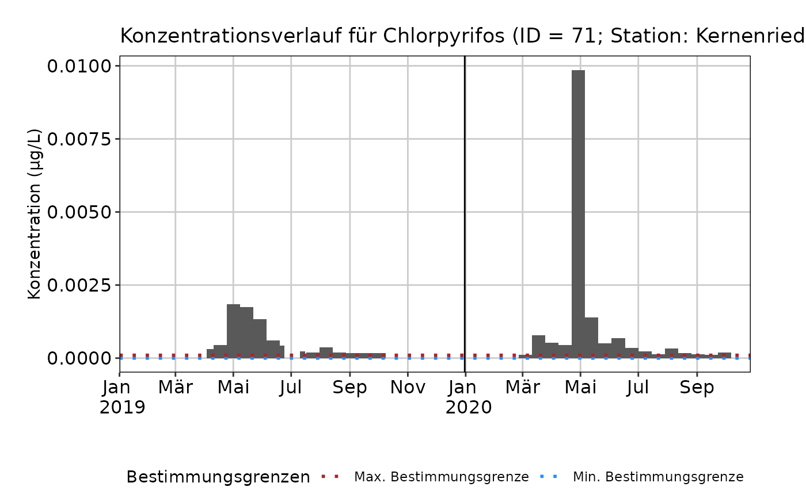

Verlauf von Mischproben plotten
plot_misch_verlauf.RdPlottet den Konzentrationsverlauf von Mikroverunreinigungen für eine bestimmte Station und Zeitraum. Dabei werden Stichproben (Proben ohne Enddatum) entfernt.
Usage
plot_misch_verlauf(
mv_daten,
regulierungen,
stationscode,
jahr = NULL,
id_substanz = NULL,
zulassungstyp = "[BP]",
plot_typ = "barplot",
plot_bg = TRUE,
plot_parametergruppe = ""
)Arguments
- mv_daten
Dataframe mit aufbereiteten MV-Daten gemäss Spezifikation
- regulierungen
Dataframe mit aufbereiteten Regulierungs-Daten gemäss Spezifikation
- stationscode
Station, für welche der Plot erstellt werden soll
- jahr
Jahre (numerischer Vektor), für welche ein Verlauf geplottet werden soll. Falls
NULL(Vorgabewert), werden alle verfügbaren Daten geplottet.- id_substanz
Legt fest, ob für eine Substanz (Vektorlänge = 1; z.B.
id_substanz = 71), mehrere Substanzen (Vektorlänge > 1; z.B.id_substanz = c(71, 91)) oder alle Substanzen (Summen) der Verlauf geplottet werden soll. FallsNULL(Vorgabewert) wird ein Summenplot erstellt- zulassungstyp
Filtert nach der Zulassungsart (Spalte
Informationen Rechtin Regulierungstabelle). Wird als regulärer Ausdruck interpretiert. Der Vorgabewert filtert nach Bioziden und Pflanzenschutzmitteln (auch mit ausgelaufener Zulassung). Für die Darstellung aller Substanzen (z.B. für gruppierten Barplot) "Alle" verwenden. Falls nur bestimmte Zulassungsschlüssel verwendet werden sollen, dies als regulären Ausdruck angeben (z.B.zulassungstyp = "B|PX"für zugelassene Biozide und/oder nicht mehr zugelassene PSM).- plot_typ
Plottyp in Abhängigkeit des gewählten Modus bei
id_substanz.Falls
length(id_substanz) == 1, sind die folgenden Werte erlaubt:"barplot","striche","treppen". Wenn vorhanden, werden minimale und maximale Bestimmungsgrenzen geplottetFalls
length(id_substanz) > 1, sind die folgenden Werte erlaubt:"striche","treppen". Es werden keine Bestimmungsgrenzen geplottet.Falls keine
id_substanzangegeben wird, werden Summenplots gezeichnet. Folgende Werte sind erlaubt:"barplot","kombiniert","treppen"."kombiniert"stellt eine Kombination der anderen beiden Plottypen dar (z.B. für Kontrollzwecke).
- plot_bg
Logisch (Vorgabe:
TRUE). Sollen Bestimmungsgrenzen, falls vorhanden, gezeichnet werden?- plot_parametergruppe
Name der Spalte (String), die für das Kategorisieren gruppierter Barplots (Summenplots) verwendet werden soll. Für die Daten des GBL Bern "PARAMETERGRUPPE" verwenden.
Details
Es sind in Abhängigkeit des Modus (id_substanz) verschiedene Plottypen plot_typ erlaubt:
"barplot": Monochromer Barplot; entweder für 1 Substanz oder Summenplots. Es werden auch überlappende Messintervalle dargestellt."kombiniert": Eine Kombination von"barplot"und"treppen"zur Diagnose/Kontrolle."striche": Horizontale Striche; entweder für 1 oder mehrere Substanzen. Es werden auch überlappende Messintervalle dargestellt."treppen": Treppenplot (ähnlich GeomStep). Kurze Messdauern <10 Tagen werden für diese Darstellung entfernt, um die Wahrscheinlichkeit von Überlappungen zu minimieren. Falls dennoch zeitliche Überlappungen existieren, stoppt die Funktion mit einem Fehler."barplot_gruppen": Nur für Summenplots (id_substanz=NULL), wennplot_parametergruppe(siehe unten) angegeben ist und diese Spalte in den Daten existiert. Zeigt Barplots gruppiert nach einer bestimmten Kategorisierung (z.B. Aufteilung in Pestizide, Haushaltschemikalien und Arzneimittel). Achtung: Damit Stoffe unabhängig vom Zulassungsstatus gezeigt werden, muss beizulassungstyp"Alle" gesetzt sein.
Examples
# Summenplot mit Barplot-Darstellung
plot_misch_verlauf(mvdaten_beispiel_mvwizr, regulierungen_mvwizr, "URT010")
#> Warning: OS reports request to set locale to "de_CH.utf8" cannot be honored
#> Warning: OS reports request to set locale to "de_CH.utf8" cannot be honored
#> Warning: OS reports request to set locale to "de_CH.utf8" cannot be honored
#> Warning: OS reports request to set locale to "de_CH.utf8" cannot be honored
# Summenplot mit Treppen-Darstellung
plot_misch_verlauf(mvdaten_beispiel_mvwizr, regulierungen_mvwizr,
"URT010",
plot_typ = "treppen"
)
#> Warning: OS reports request to set locale to "de_CH.utf8" cannot be honored
#> Warning: OS reports request to set locale to "de_CH.utf8" cannot be honored
#> Warning: OS reports request to set locale to "de_CH.utf8" cannot be honored
#> Warning: OS reports request to set locale to "de_CH.utf8" cannot be honored

# Summenplot mit Treppen-Darstellung bei überlappenden Intervallen - Fehler!
if (FALSE) {
plot_misch_verlauf(mvdaten_beispiel_mvwizr, regulierungen_mvwizr,
"MUS001",
plot_typ = "treppen"
)
}
# Verlauf von Einzelsubstanzen mit Barplots und Anzeige der Bestimmungsgrenze:
plot_misch_verlauf(mvdaten_beispiel_mvwizr, regulierungen_mvwizr,
"URT010",
id_substanz = 71
)
#> Warning: OS reports request to set locale to "de_CH.utf8" cannot be honored
#> Warning: OS reports request to set locale to "de_CH.utf8" cannot be honored
#> Warning: OS reports request to set locale to "de_CH.utf8" cannot be honored
#> Warning: OS reports request to set locale to "de_CH.utf8" cannot be honored

# Verlauf mehrerer Substanzen mit Strichen:
plot_misch_verlauf(mvdaten_beispiel_mvwizr, regulierungen_mvwizr,
"URT010",
plot_typ = "striche", id_substanz = c(71, 91)
)
#> Warning: OS reports request to set locale to "de_CH.utf8" cannot be honored
#> Warning: OS reports request to set locale to "de_CH.utf8" cannot be honored
#> Warning: OS reports request to set locale to "de_CH.utf8" cannot be honored
#> Warning: OS reports request to set locale to "de_CH.utf8" cannot be honored
# Verlauf Summe aller Substanzen (nicht nur Pestizide) als gruppierte Barplots
plot_misch_verlauf(mvdaten_beispiel_mvwizr, regulierungen_mvwizr,
"URT010",
plot_typ = "barplot_gruppen", zulassungstyp = "Alle",
plot_parametergruppe = "PARAMETERGRUPPE"
)
#> Warning: OS reports request to set locale to "de_CH.utf8" cannot be honored
#> Warning: OS reports request to set locale to "de_CH.utf8" cannot be honored
#> Warning: OS reports request to set locale to "de_CH.utf8" cannot be honored
#> Warning: OS reports request to set locale to "de_CH.utf8" cannot be honored